spiketrain¶
Spike train utility methods.
Utility methods for reading spike train files as well as to analyze spike train matrices and vectors.
See also
SpikePlot for visualization of spike trains.
AUTHORS:
THOMAS MCTAVISH (2010-03-01): initial version
- THOMAS MCTAVISH (2011-05-03): Additions mostly for synchrony analysis and
filtering. Refactored as spiketrain instead of spiketrainutil.
- neuronpy.util.spiketrain.closest_timing(reference_train, comparing_train, window=100)[source]¶
For each spike in the reference train, determine the closest spike time in the other train at least within some window.
Parameters: - reference_train – List of spike times of the reference train.
- comparing_train – List of spike times in the comparing train.
- window – Time window in ms to search.
Returns: A dict where the keys are indices of the reference train and the time difference of the closest spike in the comparing train is the value.
- neuronpy.util.spiketrain.coincidence_factor(ref, comp, window=5, isi=None)[source]¶
The coincidence factor 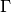 between two spike trains is defined as
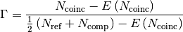
where 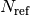 are the number of spikes in the reference train, 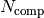 is the number of spikes in the comparing train, 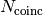 is the number of coincident spikes within a time window 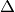, 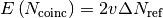 is the expected number of coincident spikes that would be given by chance if the spikes in the comparing train were generated by a homogeneous Poisson process with its rate
 . This correlation measure has the range
[-1, 1] where 1 is perfectly correlated, 0 is not correlated, and -1 is
perfectly anti-correlated.
. This correlation measure has the range
[-1, 1] where 1 is perfectly correlated, 0 is not correlated, and -1 is
perfectly anti-correlated.Parameters: - ref – Spike times of the reference train. It is assumed that the spike times are ordered sequentially.
- comp – Spike times of the train that shifts in time. It is assumed that the spike times are ordered sequentially.
- window – Time window to say that two spikes are synchronized. This has a default value of 5.
- isi – If supplied, this is the isi of the comparing train. Otherwise, the rate of the train is computed by taking the last spike minus the first spike and dividing by the number of spikes in between.
Returns: Coincidence factor
- neuronpy.util.spiketrain.coincidence_factor_phase(ref, comp, window=5, num_intervals=13, isi=None)[source]¶
Parameters: - ref – Spike times of the reference train. It is assumed that the spike times are ordered sequentially.
- comp – Spike times of the comparing train that shifts in time. It is assumed that the spike times are ordered sequentially.
- window – Time window to say that two spikes are synchronized. This has a default value of 5.
- num_intervals – Number of iterations to perform, sliding comp from [-1/2, 1/2] the median of ref‘s interspike interval. This should be an odd number to ensure a precise sample about 0 delay.
- isi – If supplied, this is the isi of the comparing train. Otherwise, the rate of the train is computed by taking the last spike minus the first spike and dividing by the number of spikes in between.
Returns: A vector of length num_intervals that corresponds to coincidence factor values from a shift of -isi/2 to isi/2.
- neuronpy.util.spiketrain.coincident_spikes(ref, comp, window=5, normalize=False, compfreq=None)[source]¶
Get the fraction of coincident spikes between two trains. Coincidence is defined as a spike co-occurring within some time window.
Parameters: - ref – Spike times of the reference train. It is assumed that the spike times are ordered sequentially.
- comp – Spike times of the comparing train that shifts in time. It is assumed that the spike times are ordered sequentially.
- window – Time window to say that two spikes are coincident. This has a default value of 5 ms.
- normalize – If True, values are normalized by the rate expected by chance, which is defined as 2 * frequency(comp) * window * len(ref). Also, a tuple is returned as (normalized_coincidences, coincidences, expected_coincidences, total_spikes) where total_spikes is the length of both trains.
- compfreq – Frequency in Hz of comparing train. If None, the mean frequency of the comparing train is calcluated and used. This is only used when normalize is True.
Returns: A vector of length 1 + 2*timewindow/dt. If normalize is True, return a tuple as (normalized_coincidences, coincidences, expected_coincidences, total_spikes).
- neuronpy.util.spiketrain.coincident_spikes_correlogram(ref, comp, window=5, dt=1, timewindow=100, normalize=False)[source]¶
Get the correlogram of coincident spikes between two trains. Coincidence is defined as a spike co-occurring within some time window. The number of coincidences is returned as a vector of len(1 + (2*timewindow)). This means that the middle index is the value at lag zero ms.
Parameters: - ref – Spike times of the reference train. It is assumed that the spike times are ordered sequentially.
- comp – Spike times of the comparing train that shifts in time. It is assumed that the spike times are ordered sequentially.
- window – Time window to say that two spikes are synchronized. This has a default value of 5.
- dt – The binwidth.
- timewindow – Correlogram range between [-timewindow, timewindow].
- normalize – If True, values are normalized by the rate expected by chance at each lag, where chance is defined as 2 * frequency(comp) * window * len(ref).
Returns: A vector of length 1 + 2*timewindow/dt.
- neuronpy.util.spiketrain.filter(spikes, kernel=[1.0], origin='center', window=None, dt=1)[source]¶
Convolve a 1D spike train with a kernel and return the resulting vector. This is useful for blurring or otherwise smearing spike times with a particular function, like a gaussian, a linear decay.
Parameters: - spikes – A 1D python list or numpy array of spike times.
- kernel – A 1D python list or numpy array of filter values. Care might need to be taken to ensure that this sums to 1 to keep the magnitude the same. By default this is [1.0], which means that the output is a copy of the input.
See also
Parameters: origin – can be a string or an integer.: - integer is an integer to specify the offset of the kernel applied in the convolution. This needs to be between 0 and the length of the kernel - 1. By default, this is 0 and therefore centers the kernel. A negative value shifts the kernel to the right and a positive value shifts the kernel to the left.
- string Can be ‘left’, ‘center’, or ‘right’
Parameters: - window – A tuple, (lo, hi), specifying a subset in time if the complete spikes are not used. The default value of None uses the complete spikes.
- dt – Is the time bin to discretize by. Default is 1.
Returns: A 1D vector of the filtered spikes.
- neuronpy.util.spiketrain.filter_correlogram(train_a, train_b=None, kernel=None, origin=None, dt=1.0, shift=None, window=None, mode='same')[source]¶
Perform a cross-correlation between two spike trains after filtering them to be continuous time domain vectors.
Parameters: - train_a – List of spike times in one train.
- train_b – List of spike times in another train. Default is None, which means that autocorrelation is performed on train_a.
- kernel – Is the 1D filter that is applied to the two trains before they are correlated. By default, this is None, which has no filtering effect.
- origin – Offset for the filter. .. seealso:: filter().
- dt – Timestep interval for spike trains to be filtered to.
- shift – Maximum time shift of the correlogram. By default, this is None, which means that the trains are convolved using numpy’s correlation function, http://docs.scipy.org/doc/numpy/reference/generated/numpy.correlate.html. If specified, then the convolution is performed across the sliding window from [-shift, shift].
- window – Evaluate spikes within a time window. By default, this is None, which means that both full trains are evaluated. In this case, the first and last spike times of the trains are padded with the kernel used. Otherwise, this is a 2-element list.
- mode – Mode for numpy’s correlation function, http://docs.scipy.org/doc/numpy/reference/generated/numpy.correlate.html. If shift is specified, this parameter is ignored.
Returns: Tuple (raw_val, norm_factor, expected_val) where raw_val is a scalar if mode='valid' or a vector if mode is a different value. norm_factor the value (scalar) of train_a correlated with itself. expected_vaL the value (scalar) of the mean of each correlated with itself.
- neuronpy.util.spiketrain.get_flattened(spikes)[source]¶
Project the spike times from a 2d spike map to an ordered list in one dimension. This is similar to numpy’s flatten() method, but numpy requires a rectangular matrix. In our case, each row of the spikes array can have a variable number of spike times, and even be empty.
- neuronpy.util.spiketrain.get_frequency(train)[source]¶
Get the mean frequency of a spike train. Assumes time is in ms.
- neuronpy.util.spiketrain.get_histogram(spikes, window=None, dt=1, bins=None)[source]¶
Get the histogram of one or more spike trains. This is a means of quantizing 1D spikes as well.
Parameters: - spikes – A 1D python list, or 1D or 2D numpy array of spike times.
- window – A tuple, (lo, hi), specifying a subset in time if the complete spikes are not used. The default value of None uses the complete spikes.
- dt – Is the time bin to discretize by. Default is 1.
- bins – A numpy array specifying the histogram edges. Default is None. If bins is specified, then it ignores window and dt.
Returns: A tuple of the form (discrete, bin_edges).
- neuronpy.util.spiketrain.get_isi_vec(spikes)[source]¶
Given an ordered list of spike times, return its interspike interval vector.
Parameters: train – 1D list or numpy array of spike times Returns: A 1D vector of length len(spikes)-1 of the time differences in spikes. numpy.diff
- neuronpy.util.spiketrain.get_mean_isi(train)[source]¶
Get the mean interspike interval of a given spike train.
Parameters: train – 1D list or numpy array of spike times Returns: Mean interspike interval.
- neuronpy.util.spiketrain.get_median_isi(train)[source]¶
Get the median interspike interval of a given spike train.
Parameters: train – 1D list or numpy array of spike times Returns: Median interspike interval.
- neuronpy.util.spiketrain.get_permuted_train(train, num_copies=1, smear=False, seed=None)[source]¶
With a given spike train, capture its interspike intervals and permute them into a new spike train.
Parameters: - train – is the spike train to permute. It is unaffected.
- num_copies – is the number of times the spike train is permutted. The default value of 1 returns a permutted vector the same length as the original train. A value of 2 would return a vector twice the length.
- smear – When True, this adds a random time in the range [-mean_isi/2., mean_isi/2] to appending trains. Default is False.
- seed – is the seed for the random generator. Default is None, which then uses the system time.
- neuronpy.util.spiketrain.get_phase_correlation(reference_train, sliding_train, window=5, sliding_intervals=13, isi=None)[source]¶
Get the number of corresponding spikes within some time window between two trains across a number of time-shifted trials.
The number of correlated spikes between two trains that are within some time constant of each other is simply the fraction:
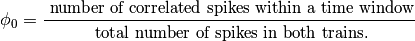
where 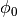 is the fraction with no delay between the trains. To determine the correlation at some arbitrary delay,
 , we
can re-write the equation as:
, we
can re-write the equation as: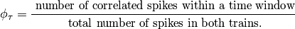
where
is the time one train is shifted relative to the
reference train.When the trains are spiking fairly regularly and oscillating around a particular frequency, it is useful to vary
over the interval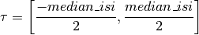
where median_isi is the median interspike interval of the reference train. This permits a measure of the relative phase of one spike train over the other. As
varies over this interval, the individual
values of 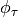 can be stored in a vector,  .
.Parameters: - reference_train – Spike times of the reference train. It is assumed that the spike times are ordered sequentially.
- sliding_train – Spike times of the train that shifts in time. It is assumed that the spike times are ordered sequentially.
- window – Time window to say that two spikes are synchronized. This has a default value of 5.
- sliding_intervals – Number of iterations to perform, sliding sliding_train from [-1/2, 1/2] the median of reference_train‘s interspike interval. This should be an odd number to ensure a precise sample about 0 delay.
- isi – If specified, this value will override the median interspike interval of the reference train.
Returns: The following values:
- relative_sync, which is the value of the number of
correlated spikes with no delay offset between the spike train, divided by the mean of the
.
- phi_0, which is the number of correlated spikes within the
time window divided by the total number of spikes in both trains.
mu, the mean of the
vector.phi_vec, the
vector.
See also
- neuronpy.util.spiketrain.get_spike_bounds(spikes)[source]¶
From a 2D array of spike data, retrieve the minimum and maximum spike times.
- neuronpy.util.spiketrain.get_spikes(data, idx=0, window=None)[source]¶
Get the spikes from the cell with this idx within a time window.
Parameters: - data – is the spike data. This should be a 2D array or a set or dict where the spikes from a given cell can be accessed as data[idx]. The spikes also need to be sorted in time if window is specified.
- idx – id(s) from data to extract. If blank, then this will retrieve the spikes of 0. If an integer, it will return the spikes of that index. If a list of integers, then it will return those spikes in the list.
- window – A tuple, (lo, hi), specifying the window range of values to return.
Returns: If idx is a scalar, then this will return the spikes associated with one cell. If idx is a list of indices, then a dict of lists will be returned.
- neuronpy.util.spiketrain.get_sync_masks(train_a, train_b, window=5)[source]¶
For two spike trains, return the mask of those spikes that are within some time window of co-occurrence in the other train.
Parameters: - train_a – A list of spike times.
- train_b – Another list of spike times.
- window – Time window +/- about a given spike in one train to look for a co-occuring spike in the other train.
Returns: Two vectors of len(train_a) and len(train_b) where a zero indicates that a spike does not co-occur in the other train, and 1 indicates that a spike co-occurs in the other train within window time.
- neuronpy.util.spiketrain.get_sync_traits(train_a, train_b, window=5)[source]¶
For two spike trains, get their masks where they have spikes that occur within window time of each other and the ratio of correlated vs. total spikes in both trains.
Parameters: - train_a – List of spike times in one train.
- train_b – List of spike times in another train.
- window – Time window to search for correlated inputs.
Returns: mask_a, mask_b, ratio – the correlated masks and the ratio of correlated vs. total spikes in both trains.
- neuronpy.util.spiketrain.netconvecs_to_dict(t_vec, id_vec)[source]¶
Convert data from NetCon.record(tvec, idvec) vectors into a dict where the keys of the dict are the ids and the value is a list of timestamps associated with that id.
Parameters: - tvec – Timestamp vector.
- idvec – Associated ids of each timestamp.
Example:
# nclist is a list of NetCons t_vec = nrn.Vector() id_vec = nrn.Vector() for i in range(len(nclist)): nclist[i].record(t_vec, id_vec, i) simulate()
Returns: The data in a dict where the key is the cell id and the list of spike times is the data associated with the cell.
- neuronpy.util.spiketrain.netconvecs_to_listoflists(t_vec, id_vec, minmax=None)[source]¶
Convert data from NetCon.record(tvec, idvec) vectors into a dict where the keys of the dict are the ids and the value is a list of timestamps associated with that id.
Parameters: - tvec – Timestamp vector.
- idvec – Associated ids of each timestamp.
- min – If specified as a tuple, then the full range of values will between (min, max) will be inserted as empty lists if they are not present in id_vec.
Example:
# nclist is a list of NetCons t_vec = nrn.Vector() id_vec = nrn.Vector() for i in range(len(nclist)): nclist[i].record(t_vec, id_vec, i) simulate()
Returns: The data as a list of lists with each row being the spike times.
- neuronpy.util.spiketrain.permute_vec(vec, seed=None)[source]¶
Permute a 1D array.
Parameters: - vec – The vector to permute.
- seed – The seed for the random number generator. Default is None, which uses the system time.
Returns: A permuted copy of vec.
- neuronpy.util.spiketrain.poisson_train(frequency, duration, start_time=0, seed=None)[source]¶
Generator function for a Homogeneous Poisson train.
Parameters: - frequency – The mean spiking frequency.
- duration – Maximum duration.
- start_time – Timestamp.
- seed – Seed for the random number generator. If None, this will be decided by numpy, which chooses the system time.
Returns: A relative spike time from t=start_time, in seconds (not ms).
EXAMPLE:
# Make a list of spikes at 20 Hz for 3 seconds spikes = [i for i in poisson_train(20, 3)]
EXAMPLE:
# Use dynamically in a program # Care needs to be taken with this scenario because the generator will # generate spikes until the program or spike_gen object is terminated. spike_gen = poisson_train(20, duration=sys.float_info.max) spike = spike_gen.next() # Process the spike, to other programmatic things spike = spike_gen.next() # Get another spike # etc. # Terminate the program.
- neuronpy.util.spiketrain.print_spikes(data, idx=0, window=None)[source]¶
Print the spike times of cell idx within interval window.
Parameters: - data – This should be a 2D array or a set or dict where the spikes from a given cell can be accessed as data[idx]. The spikes also need to be sorted if window is specified.
- idx – id(s) from data to extract. If blank, then this will retrieve the spikes of 0. If an integer, it will return the spikes of that index. If a list of integers, then it will return those spikes in the list.
- window – A tuple, (lo, hi), specifying the window range of values to return.
- neuronpy.util.spiketrain.read_file(file_name, spike_ids=None)[source]¶
Read the spike data formatted from NEURON where each line is a timestamp of spike followed by a cell (or other spike generator) id that gave the spike.
Parameters: - file_name – Name of the spike file to read.
- spike_ids – If specified, a subset of ids to load. This should be a sorted-ascending list.
Returns: The data in a dict where the key is the cell id and the list of spike times is the data associated with the cell.
- neuronpy.util.spiketrain.read_file_to_vector(file_name, spike_ids=None)[source]¶
Read the spike data formatted from NEURON where each line is a timestamp of spike followed by a cell (or other spike generator) id that gave the spike.
Parameters: - file_name – Name of the spike file to read.
- spike_ids – If specified, a subset of ids to load. This should be an sorted-ascending list.
Returns: The data in a vector of tuples of the format (time, gid).
- neuronpy.util.spiketrain.subset_file(file_name, out_file_name, spike_ids)[source]¶
Read the spike data formatted from NEURON where each line is a timestamp of a spike followed by a cell (or other spike generator) id that gave the spike. Echo a new file in the same format, but only of those spike_ids specified in the spike_ids list. :param file_name: Input file to read. :param out_file_name: Output file to write. :param spike_ids: List of spike ids to write out.
- neuronpy.util.spiketrain.validate_kernel_and_origin(kernel, origin)[source]¶
Confirm that the origin for this kernel is valid. Raise an exception if not.
Parameters: origin – can be a string or an integer.: - integer is an integer to specify the offset of the kernel applied in the convolution. This needs to be between 0 and the length of the kernel - 1. By default, this is 0 and therefore centers the kernel. A negative value shifts the kernel to the right and a positive value shifts the kernel to the left.
- string Can be ‘left’, ‘center’, or ‘right’
Returns: a valid integer if a string was used.